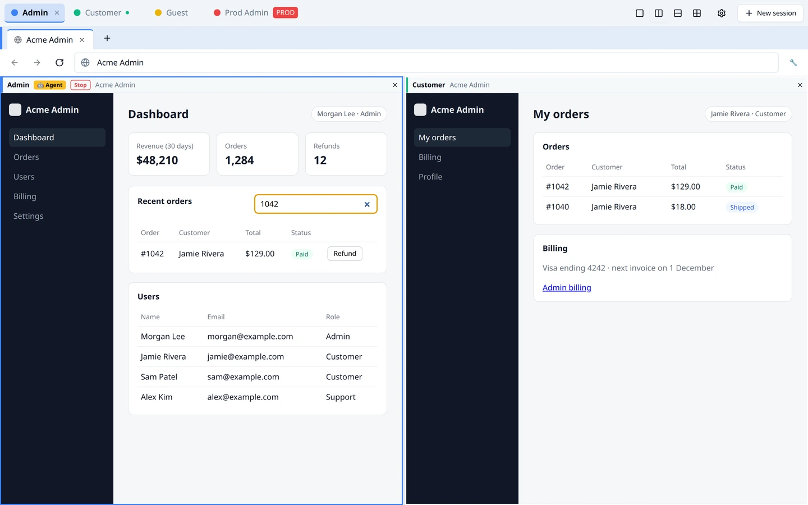
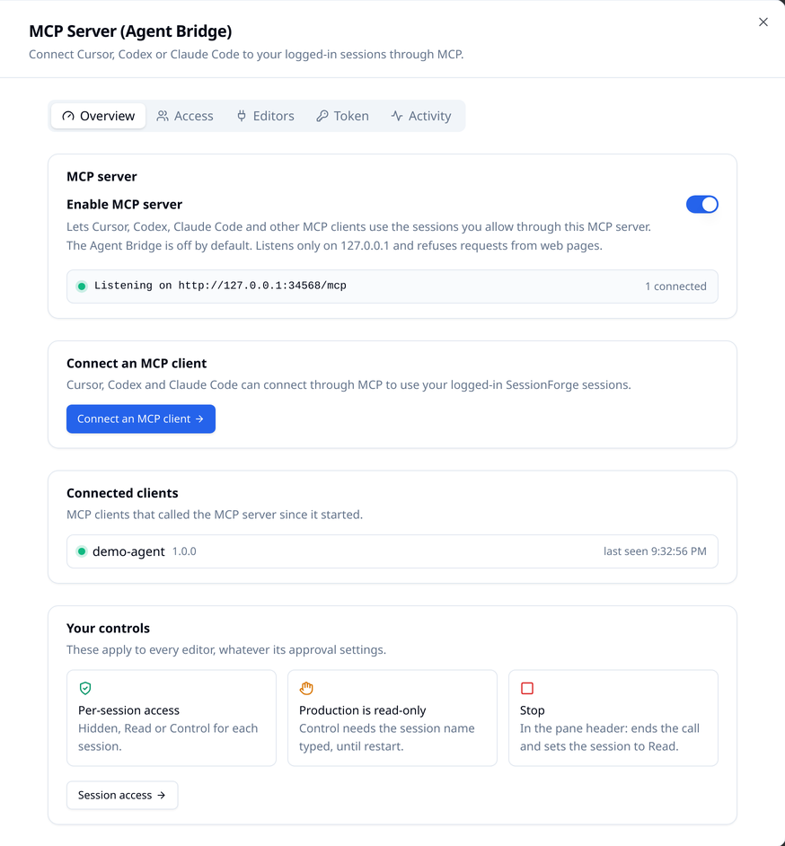

Let Claude Code, Cursor or Codex test your app while logged in
Turn on SessionForge's local MCP server, add it to Cursor, Codex or Claude Code, and your agent can use the sessions you are already logged in to.


An MCP client typed "1042" into the Admin search box. The Agent label and Stop button show which pane it is using.
Why your agent needs your sessions
Most of what matters in a web app sits behind a login, and differs by role. An agent with a fresh, logged-out browser can't see it, and you don't want to hand it passwords. SessionForge has no AI of its own: it is the browser your coding agent uses, with the logins you already made.
What the agent can do
The MCP server has 17 tools:
list_sessionsopennavigatebackreloadsnapshotclicktypeselectpresswait_forscreenshotconsole_logsnetwork_logsend_request_asget_layoutset_layout
snapshot returns a compact page outline with element refs, and click and type use real input events on those refs. send_request_as sends one HTTP request as several sessions and returns one column per role with a summary of what differs.
A typical flow
list_sessions→ seeAdminandCustomerand your access to each.open { session: "Admin", url: "http://localhost:3000/billing" }→ the page is shown in a pane.snapshot { session: "Admin" }→ find refs such as[ref=e12].click { session: "Admin", ref: "e12" }ortype { session: "Admin", ref: "e7", text: "hello", submit: true }.send_request_as { sessions: ["Admin", "Customer"], include_no_session: true, url: "http://localhost:3000/api/billing" }→ one column per role.
An example prompt for your editor:
Use SessionForge. Check that a Customer gets 403 on /admin/billing and an Admin gets 200.Give your agent the rules in docs/agents/sessionforge.md: a Cursor rule and a section for AGENTS.md or CLAUDE.md.
What keeps it safe
- The server is off by default and listens on 127.0.0.1 only. Requests with an Origin header are refused, so web pages can't reach it.
- Every request needs a 256-bit bearer token, stored encrypted with the OS keyring.
- Each session is Hidden, Read or Control for agents. New sessions start at Read. Production sessions are read-only unless you type the session name to confirm.
- Stop in the pane header sets the session back to Read and ends the running call. The activity log lists every call.
- Secrets are redacted in results, page content is labelled untrusted, calls are rate limited, and there is no eval, CDP, file or shell tool.


Settings → MCP Server → Overview. Captured with a local demo app and a small MCP client script named demo-agent.
Set it up
Turn on the server, export the token, and add one snippet to your editor. The snippets are on the home page and in Getting started.
Limitations. The MCP server is new: it first shipped in v0.1.0. It has no arbitrary JavaScript, file uploads, downloads or cross-origin iframe support. snapshot does not see inside closed shadow DOM. Read access allows GET, HEAD and OPTIONS through send_request_as, and a GET can still change things (for example /logout). Anything an agent does is done as that logged-in user.